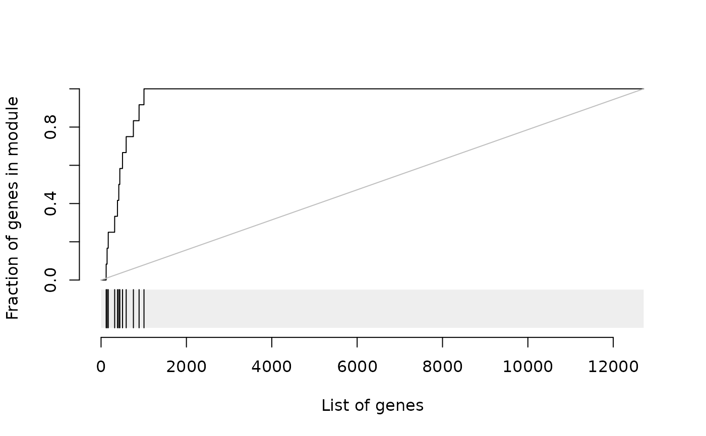

evidencePlot.RdCreate an evidence plot for a module
evidencePlot( l, m, mset = "all", rug = TRUE, roc = TRUE, filter = FALSE, unique = TRUE, add = FALSE, col = "black", col.rug = "#eeeeee", gene.labels = NULL, gene.colors = NULL, gene.lines = 1, gl.cex = 1, style = "roc", lwd = 1, lty = 1, rug.size = 0.2, legend = NULL, ... )
| l | sorted list of HGNC gene identifiers |
|---|---|
| m | character vector of modules for which the plot should be created |
| mset | Which module set to use (see tmodUtest for details) |
| rug | if TRUE, draw a rug-plot beneath the ROC curve |
| roc | if TRUE, draw a ROC curve above the rug-plot |
| filter | if TRUE, genes not defined in the module set will be removed |
| unique | if TRUE, duplicates will be removed |
| add | if TRUE, the plot will be added to the existing plot |
| col | a character vector color to be used |
| col.rug | a character value specifying the color of the rug |
| gene.labels | if TRUE, gene names are shown; alternatively, a named character vector with gene labels to be shown, or NULL (default) for no labels (option evaluated only if rug is plotted) |
| gene.colors | NULL (default) or a character vectors indicating the color for each gene. Either a named vector or a vector with the same order of genes as `l`. |
| gene.lines | a number or a vector of numbers; line width for marking the genes on the rug (default=1). If the vector is named, the names should be gene ids. |
| gl.cex | Text cex (magnification) for gene labels |
| style | "roc" for receiver-operator characteristic curve (default), and "gsea" for GSEA-style (Kaplan-Meier like plot) |
| lwd | line width (see par()) |
| lty | line type (see par()) |
| rug.size | fraction of the plot that should show the rug. If rug.size is 0, rug is not drawn. If rug.size is 1, ROC curve is not drawn. |
| legend | position of the legend. If NULL, no legend will be drawn |
| ... | Further parameters passed to the plotting function |
This function creates an evidence plot for a module, based on an ordered list of genes. By default, the plot shows the receiving operator characteristic (ROC) curve and a rug below, which indicates the distribution of the module genes in the sorted list.
Several styles of the evidence plot are possible: * roc (default): a receiver-operator characteristic like curve; the area under the curve corresponds to the effect size (AUC) * roc_absolute: same as above, but the values are not scaled by the total number of genes in a module * gsea * enrichment: the curve shows relative enrichment at the given position
# artificially enriched list of genes set.seed(123) data(tmod) bg <- tmod$GENES$ID fg <- sample(c(tmod$MODULES2GENES[["LI.M127"]], bg[1:1000])) l <- unique(c(fg, bg)) evidencePlot(l, "LI.M127")evidencePlot(l, filter=TRUE, "LI.M127")